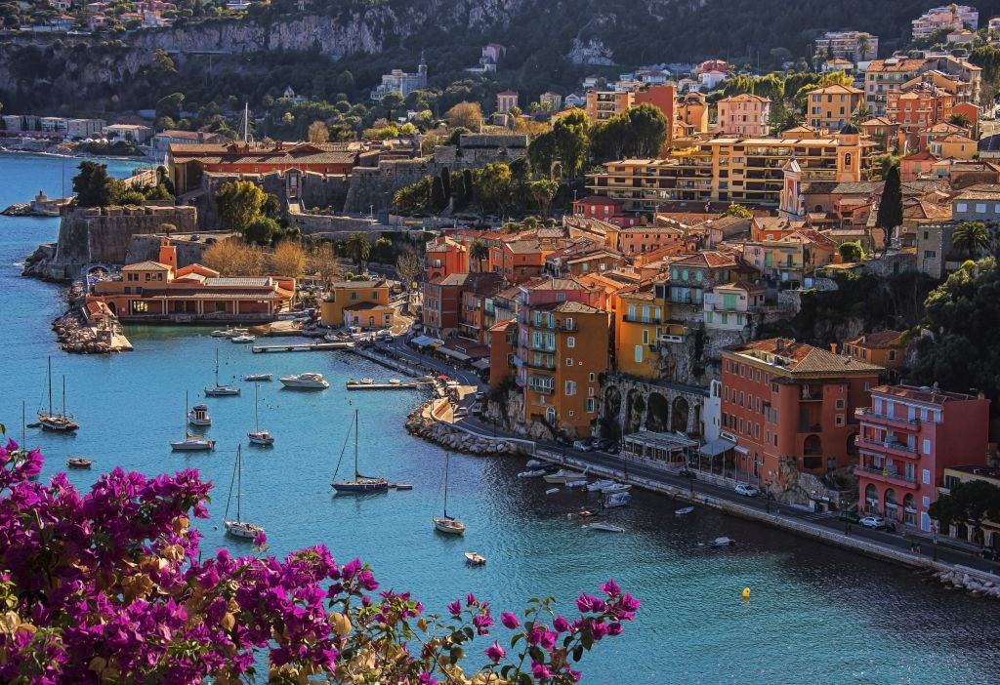
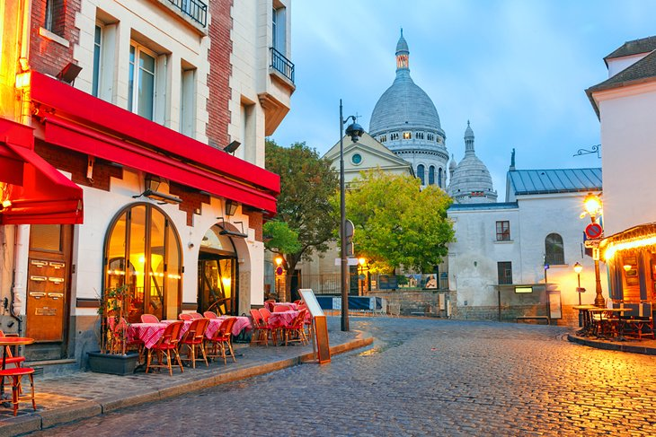
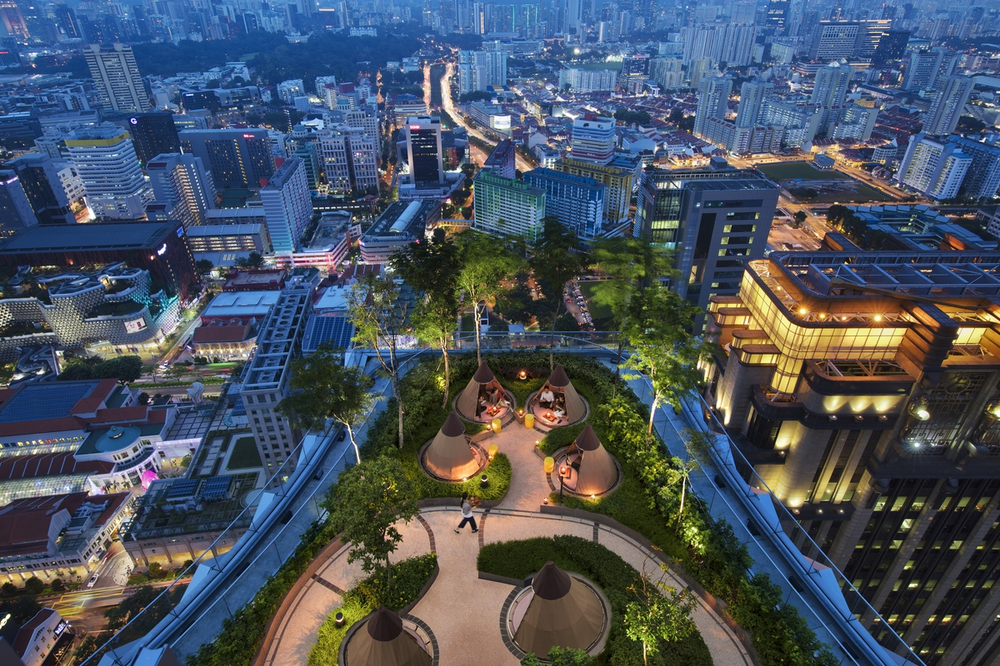
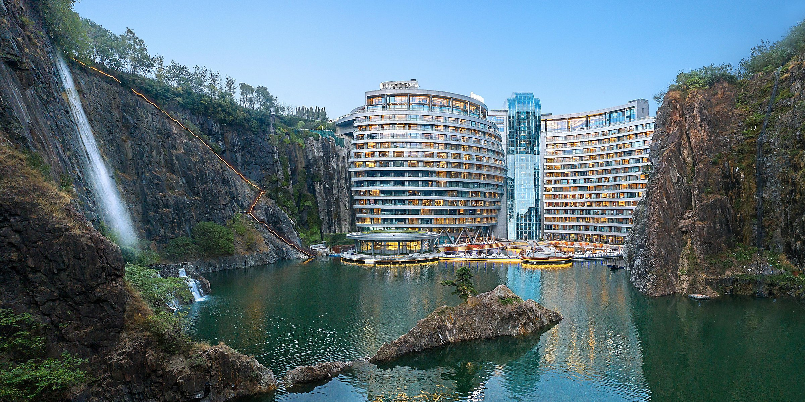
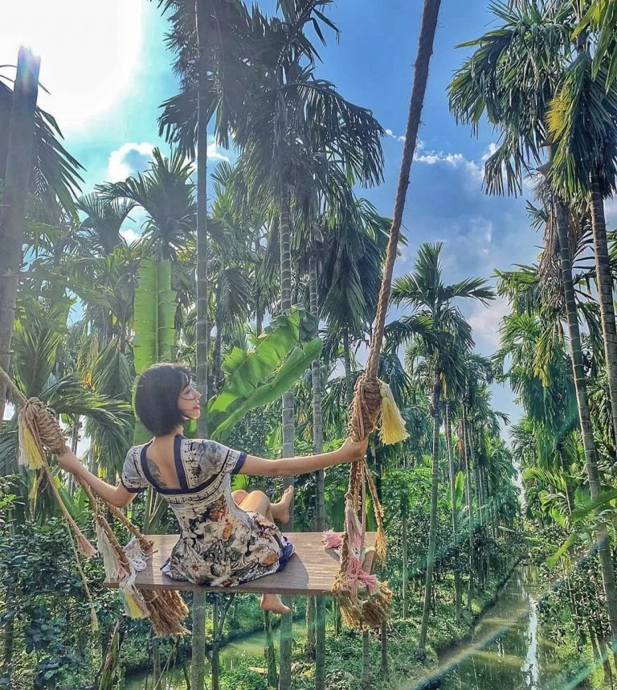

TRAVEL DESTINATIONS
FRANCE
ANTIBES
Within the stone ramparts, the old town of Vieil Antibes looks like it hasn’t changed much in centuries. It’s a maze of narrow cobbled streets, overlooked by pastel-coloured buildings with brightly painted shutters. Antibes’ old town has pavement cafés and restaurants mixed with shops selling local gifts like white cotton clothes, glassware, local artworks and herbs. Don’t miss the Marché Provençal (6am–1pm daily June–September, and every day except Monday the rest of the year), where traders from around Provence bring fresh produce to sell – fruit and vegetables, cheeses, olives and charcuterie. And there’s a path along the edge of the ramparts so you can walk from the harbour to the southern beaches along the water’s edge.
Packed with 1800 boats, Antibes’ Port Vauban is the Mediterranean’s largest marina – and with mooring fees of over a million euros it’s probably one of the most profitable too. This natural harbour has been used since Roman times, but today it’s full of some of the world’s most expensive yachts. If you want a taste of the millionaire lifestyle, you can charter one for the day – there’s everything from small boats to €6000 a day, 12-person superyachts with crew for hire.
Antibes is surrounded by beautiful beaches, and unlike a lot of the pebbly Côte d’Azur there’s plenty of golden sand with its clear turquoise waters. Closest to town is Plage de la Gravette, accessed though an archway from the port and overlooked by the old town ramparts. The sheltered cove is perfect for swimming, or join the locals for aperitifs on the beach at sunset. Just south of town are a couple more sandy stretches – Plage de Ponteil, next to the Antibes Yacht Club where you can hire boats or kayaks, and Plage de la Salis. Both have shallow water and lifeguards on duty in the summer. Further south again is Plage de la Garoupe, home to luxury private beach clubs in summer, where you can hire a lounger with drinks service – just don’t go boasting about it on social media, as the beach has enforced a selfie ban!
MONMARTRE
Paris has an impressive art scene that is accessible throughout the city, and the cobbled streets of Montmartre are bustling with artists painting breathtaking views, talented street artists and surprising sculptures. That’s not all there is to this fascinating district, however. Delve into the area’s historic past and discover its present-day character in our guide to the top 10 things to do in Montmartre.
There’s no better way to discover the secrets of this district than by visiting Montmartre’s very own museum. It stands atop the hill of Montmartre and 14 famous personalities have lived within its walls, from Renoir and Valadon to Dufy and Poulbot. Delve into the glorious history of this bohemian corner through original works by Utrillo, Toulouse-Lautrec and Willette, and enjoy an authentically rustic ambiance.
Musée d’Art Naïf Max Fourny is a great attraction, yet it’s not very well known. If you’ve spent all day taking in the art history of 17th- century France, a change of perspective, with a more modern focus, might be welcome. This museum places the contemporary Montmartre art scene in the spotlight, with more than 500 paintings and 80 sculptures. Originally built as a marketplace, it’s an exhibition centre and a hotspot for cultural events. In total there are 1,400 works from more than 55 countries represented here.
ITALY
GARDA LAKE

Lake Garda, with its mild climate and perfect water temperature, seems but a patch of sea set between the Alps and northern Italy’s Pianura Padana (i.e. the Po River Plain). Garda – which touches the three Italian Regions of Lombardy, Trentino Alto Adige and Veneto – is even surrounded by palms oleander, olive trees and vines, in addition to the picturesque villages, beaches and little ports, parks and nature reserves it is known for. Lake Garda is ideal for a tailor-made vacation, whether for nature lovers, athletes, or history and culture buffs.
Architecture, history and art aficionados cannot help but appreciate the numerous borghi, castles, monasteries, monuments and museums lining the lake’s shores. History lovers especially can marvel at the evidence of prehistoric settlements in the Valtenesi and on Monte Baldo, or the remains of Roman villas in Desenzano and Toscolano. Equally-charming are the Medieval castles and Scaliger fortresses, from which the Benaco and Sirmione Towers rise up to dominate the scene. Sacred art comes to full fruition in the Romanesque Abbey Churches of Maderno, Sirmione and Bardolino, and in the neoclassical Parocchial Churches of Bardolino and Cassone. Then, the Sanctuaries of the Madonna del Frassino, Madonna di Montecastello and Madonna della Corona make for important pilgrimage destinations. Among the countless palazzi boasting gorgeous gardens with a view, the majestic Vittoriale, former residence of writer Gabriele d’Annunzio, can be found in Gardone Riviera, a gem of a town whose architecture was developed in the Art Nouveau. The André Heller Botanical Garden is also here, with its more than 2,000 plant varieties. Finally, take this occasion to see Sirmione, thermal spa locale comprising a very characteristic historic center, the Grotte di Catullo archaeological site, and the 13th-Century Scaliger Castle.
Just about every sport can be taken up, both on and near the Lake, and with gusto – think swimming and sailing, mountain-climbing and biking, hiking and horseback riding, rafting and hang-gliding. On its southwestern coast, rather, from Sirmione to Limone, the ports of Bogliaco, Campione, and Limone are favorites of the sailing and surfing set. The Trentino coast, on the north shore – where the communities of Riva del Garda and Nago-Torbole are located – is also highly sought-after by windsurfers. And, the "Olive Riviera," the zone running from Malcesine to Peschiera, in the Province of Verona, is approximately 50 km of well-outfitted beaches and sports hubs, for those preferring fun, summer activity. (This is also where travelers can find the amusement park, Gardaland.) If relaxation is more your speed, plenty of hot springs spas abound between Sirmione and Lazise, along with other resorts and golf courses.
SINGAPORE
ROOFTOP BAR MR STORK
Name: Mr Stork
Opening hours: Sundays to Thursdays, 5pm to midnight; Fridays to Saturdays, 5pm to 1am
In a city that has no lack of rooftop bars (or crowds that flock to them) it’s hard to say what these sky high watering holes have that’s so appealing beyond having a nice view and the occasional breeze. And Mr Stork, the latest of its kind that sits atop the Andaz Singapore hotel, does indeed have a thrilling view. Been there, seen that. But Mr Stork actually does have an ace up its 39-storey-long sleeve: space. And more importantly, quiet space. The bar currently only does walk-ins, and patrons are all but running in to try and secure a table in time to view the sunset. (Go between 6:30 and 7pm for the best view.) So it will most definitely be bustling in the areas facing the glass barricades, but take a walk around the premises and you’ll find the place more closely resembles a rooftop garden than a rooftop bar. Escape from the hordes though winding paths lined with abundant foliage. Steal away into one of the teepee hut-style day beds and gaze at the stars. If you aren’t on a date, it may very well turn into one — that’s how insidiously romantic this side of Mr Stork is. Drinks here are inspired by its garden setting. The Rhubarb is a refreshing cocktail made with rhubarb puree, strawberry and lemon juice topped with sparkling wine and a shot of vodka, while the Ruby is a mix of lemon, ginger, mint, vermouth and Ceylon Arrack. The bar has also teamed up with RedDot Brewhouse for its very own Andaz Pale Ale, a crisp and fruity brew.
PULAU UBIN

As you explore this emerald island, you’ll find yourself traversing a multitude of habitats, from seagrass lagoons to mangroves teeming with wildlife. Seeing all that Pulau Ubin has to offer can be daunting on foot, so be sure to rent a bike from the stores that dot the main jetty. We suggest heading along the eastern trail, towards Chek Jawa Wetlands. This ecosystem is a confluence of six distinct habitats, including coastal forests, rocky beaches and a mangrove swamp. Keep your eyes peeled for fiddler crabs, red junglefowls and mudskippers, among many other wondrous creatures. On your way to Chek Jawa, be sure to drop by the Ubin Fruit Orchard, which houses over 350 trees heavy with durians, mangroves and breadfruit. Before you leave, be sure to visit Pekan Quarry for a picture-perfect moment at sunset. Located just a 15-minute walk away from the jetty, this former quarry is now a beautiful lake, surrounded by lush greenery and home to otters, dragonflies and various species of birds.
Outdoor activities abound on Pulau Ubin, ranging from camping and hiking to challenging bike trails. If you’re planning to spend the night on this idyllic island, camping sites can be found all across the island. Jelutong campsite is a short walk 6 minutes west of the jetty, but more adventurous visitors can head northeast to the Maman campsite or west towards Endut Senin beach. Adventurous bikers and thrill seekers can head further west towards Ketam Mountain Bike Path. This trail snakes across 10 kilometres, with challenging slopes and rock-littered descents that will prove to be a challenge for even the most seasoned sports enthusiast.
CHINA
Shimao Wonderland Intecontinental Hotel
THE SHIMAO WONDERLAND INTERCONTINENTAL (ALSO known as the Songjiang Quarry Hotel) is the world’s first five-star hotel built inside an underground, water-filled quarry. It has been successfully completed and opened to the public in November 2018 , it is also be one of the most eco-friendly places to stay in China. Built into an abandoned quarry about 20 miles from Shanghai, the hotel includes two underwater floors and a green rooftop that blends into the surrounding countryside. The unique design takes advantage of the location and natural elements such as the rocky cliffs, waterfalls, and surrounding hills. A glass waterfall atrium pours over the façade, where all 14 floors of above the water level rooms have balconies and views of the quarry. The underground floors include under water rooms and a restaurant that face a 33-foot-long aquarium, plus a leisure complex, swimming pool, and water sports. The hotel’s roof is above ground level and is partly covered with grass and trees to fit into the surrounding topography and preserve the local environment. Adjacent to the hotel is a theme park with a glass walkway and observation platform overhanging the quarry cliffs. The luxury resort hotel is not only a dazzling design concept: It was built to prevent further ecological damage to the environment around it and features an extensive sustainability program. The hotel is in fact an example of ‘Passive ‘sustainability, using the micro climate of the quarry and the thermal inertia if the rocky cliffs cooling in the summer and heating in the winter. An engineering marvel, the Shimao Wonderland Intercontinental was designed by British Architect Martin Jochman, initially with the same British firm that designed the stunning Burj Al Arab Hotel in Dubai and later with his own studio JADE+QA. It took 12 years to build partially because novel solutions were needed to transport materials down into the quarry. The chief engineer called it a “fight with gravity” that took more than 5,000 architects, engineers, designers, and workers to build.
THAILAND
AFTER THE RAIN COFFEE&GALLERY
If you’re looking for a cafe with back-to-nature experience, look no further than After The Rain Coffee & Gallery. It is located right in the middle of a coconut garden. For the cafe hoppers out there, After The Rain Coffee & Gallery is just a short drive from Bangkok. The fact that it is located right in the middle of a coconut garden makes this place unique, and of course, great for photos. The cafe offers a close-to-nature experience, where you can dine while being surrounded by lush greens. Come on an empty stomach as After The Rain Coffee & Gallery serves mains and a list of sweet treats. Sit by the stream and enjoy your meal, though the water isn’t the cleanest. Warning: It can get quite crowded during the weekend, so do come early for a better experience.
Best part of the cafe is, there’s a canal that allows you to kayak around, for FREE. Explore the precinct and be amazed by Mother nature, and while doing so, why not take a few Instagrammable photos? They also have a few more spots that could make up your Instagram feed, especially the swing. It does give us some sort of Bali vibes.